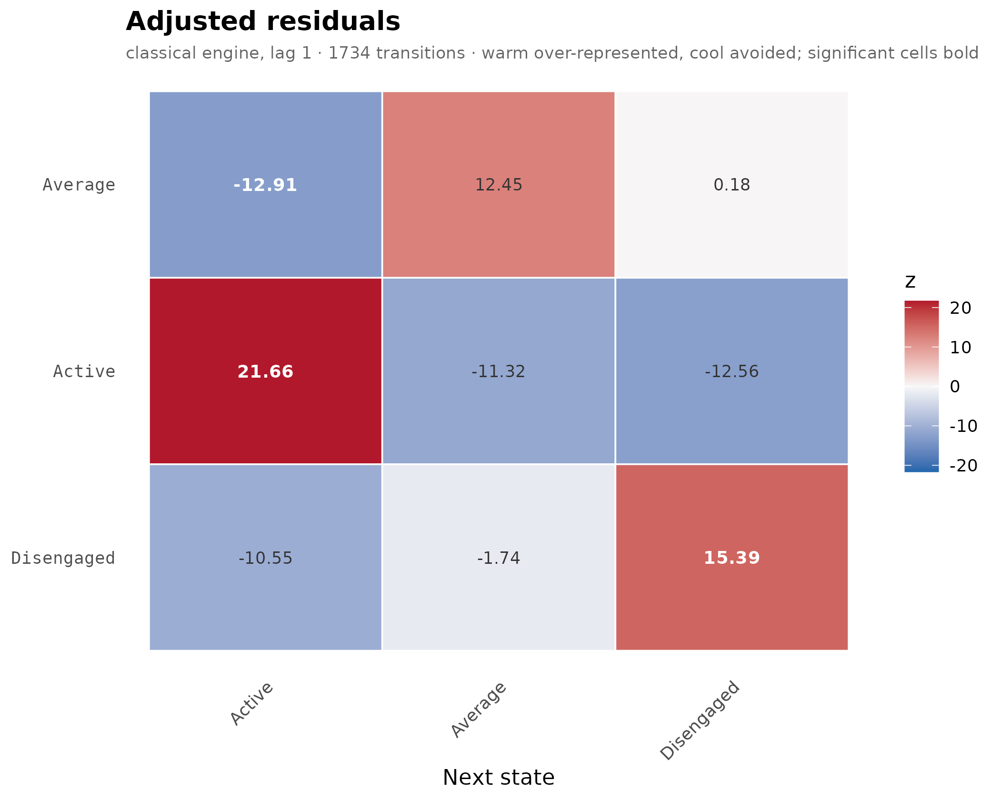
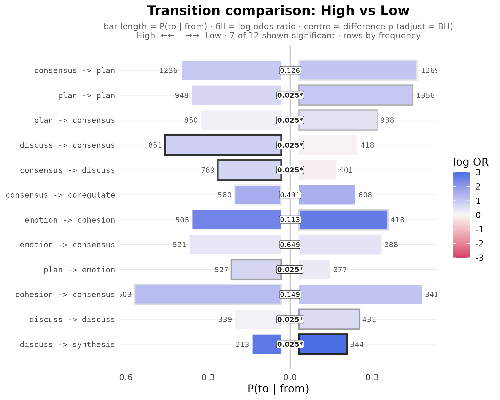

A complete workflow: from sequences to a group comparison
Mohammed Saqr
Sonsoles López-Pernas
Source:vignettes/workflow.Rmd
workflow.RmdThis vignette shows a complete applied workflow: define the sequence data, fit an LSA model, read the fitted transitions, visualise the main structure, add uncertainty evidence, start from a raw event log, and compare groups.
It assumes the method overview in
vignette("intro", package = "lagdynamics"). It uses only a
small plotting subset; the full gallery is in
vignette("plotting", package = "lagdynamics"). The full
confirmatory battery is in
vignette("confirmatory", package = "lagdynamics").
Define the sequence data
engagement contains 138 students observed over 15 weekly
time points. Each row is one student sequence. Each cell is a weekly
engagement state: Active, Average, or
Disengaged.
head(engagement)
#> 1 2 3 4 5 6 7
#> 1 Active Disengaged Disengaged Disengaged Active Active Active
#> 2 Average Average Average Average Average Average Average
#> 3 Average Active Active Active Active Active Active
#> 4 Active Active Active Active Active Average Average
#> 5 Active Active Active Average Active Average Active
#> 6 Average Average Disengaged Average Disengaged Disengaged Average
#> 8 9 10 11 12 13 14 15
#> 1 Active Average Active Average Active <NA> <NA> <NA>
#> 2 Average Average Active Average Average Average Average Average
#> 3 Active Active Average Active Active Active Active Active
#> 4 Active Active Active Average Active Average Active Average
#> 5 Active Active Disengaged Active Active Active Average Average
#> 6 Average Average Disengaged Average Disengaged Average Average AverageThis first step fixes the scope of the claim: the empirical units are students, the events are weekly states, and the ordering is column order.
Fit the model
lsa() estimates the transition table, the counts
expected under independence, and the adjusted residual for each
transition. The adjusted residual is the local test statistic: positive
values mark over-represented transitions and negative values mark
avoided transitions.
fit <- lsa(engagement)
fit
#> Lag Sequential Analysis - classical (lag 1, directed)
#> 3 states | 1734 transitions | 1870 events | 136 sequences
#> states: Active, Average, Disengaged
#> independence: G² = 618.3, df = 4, p <2e-16
#>
#> Significant transitions (p < 0.05): 7 of 9
#> strongest over-represented (of 3):
#> Active -> Active z = +21.7 ***
#> Disengaged -> Disengaged z = +15.4 ***
#> Average -> Average z = +12.5 ***
#>
#> Initial states:
#> Active 0.382 ████████████████████████
#> Average 0.368 ███████████████████████
#> Disengaged 0.250 ████████████████Read the fitted transitions
The fitted object is read through verbs. transitions()
returns one row per from -> to edge.
transitions(fit)
#> from to lag count expected prob prob_col adj_res p
#> 1 Active Active 1 459 247 0.698 0.7051 21.663 4.60e-104
#> 2 Average Active 1 153 282 0.204 0.2350 -12.906 4.16e-38
#> 3 Disengaged Active 1 39 122 0.120 0.0599 -10.549 5.11e-26
#> 4 Active Average 1 176 290 0.267 0.2307 -11.319 1.06e-29
#> 5 Average Average 1 458 330 0.610 0.6003 12.453 1.35e-35
#> 6 Disengaged Average 1 129 143 0.397 0.1691 -1.736 8.25e-02
#> 7 Active Disengaged 1 23 121 0.035 0.0719 -12.557 3.64e-36
#> 8 Average Disengaged 1 140 139 0.186 0.4375 0.176 8.60e-01
#> 9 Disengaged Disengaged 1 157 60 0.483 0.4906 15.390 1.90e-53
#> yules_q kappa kappa_z kappa_p lift sign significant
#> 1 0.828 0.4438 19.19 4.68e-82 1.858 over TRUE
#> 2 -0.601 -0.4994 -14.70 6.81e-49 0.543 under TRUE
#> 3 -0.698 -0.7069 -11.46 2.03e-30 0.320 under TRUE
#> 4 -0.534 -0.4242 -12.48 9.39e-36 0.608 under TRUE
#> 5 0.553 0.2275 9.83 7.97e-23 1.386 over TRUE
#> 6 -0.108 -0.1618 -2.96 3.03e-03 0.902 under FALSE
#> 7 -0.826 -0.8272 -13.41 5.14e-41 0.189 under TRUE
#> 8 0.011 -0.0903 -1.66 9.79e-02 1.010 over FALSE
#> 9 0.754 0.3136 13.56 7.34e-42 2.618 over TRUEFor interpretation, it is usually clearer to begin with transitions that depart from chance.
transitions(fit, significant = TRUE)
#> from to lag count expected prob prob_col adj_res p
#> 1 Active Active 1 459 247 0.698 0.7051 21.7 4.60e-104
#> 2 Average Active 1 153 282 0.204 0.2350 -12.9 4.16e-38
#> 3 Disengaged Active 1 39 122 0.120 0.0599 -10.5 5.11e-26
#> 4 Active Average 1 176 290 0.267 0.2307 -11.3 1.06e-29
#> 5 Average Average 1 458 330 0.610 0.6003 12.5 1.35e-35
#> 6 Active Disengaged 1 23 121 0.035 0.0719 -12.6 3.64e-36
#> 7 Disengaged Disengaged 1 157 60 0.483 0.4906 15.4 1.90e-53
#> yules_q kappa kappa_z kappa_p lift sign significant
#> 1 0.828 0.444 19.19 4.68e-82 1.858 over TRUE
#> 2 -0.601 -0.499 -14.70 6.81e-49 0.543 under TRUE
#> 3 -0.698 -0.707 -11.46 2.03e-30 0.320 under TRUE
#> 4 -0.534 -0.424 -12.48 9.39e-36 0.608 under TRUE
#> 5 0.553 0.227 9.83 7.97e-23 1.386 over TRUE
#> 6 -0.826 -0.827 -13.41 5.14e-41 0.189 under TRUE
#> 7 0.754 0.314 13.56 7.34e-42 2.618 over TRUEThe companion tables keep the transition interpretation grounded in node volume, starting states, and tablewise tests.
Visualise the fitted model
The default plot is the residual heatmap. It displays the LSA model directly: rows are source states, columns are target states, and colour is the adjusted residual.
plot(fit)
The residual network shows the same departure-from-chance model as directed edges.
plot(fit, type = "network")
A TNA-style transition network is a different view of the same process: edge weights are conditional transition probabilities rather than residuals.
plot(fit, type = "network", weights = "tna")
Use the plotting vignette for chord diagrams, sunbursts, comparison heatmaps, and uncertainty plots.
Add uncertainty evidence
An edge claim needs more than a fitted residual.
certainty_lsa() gives analytic credible intervals for
transition probabilities.
cert <- certainty_lsa(fit)
cert
#> <lsa_certainty> (analytic Dirichlet-Multinomial)
#> engine: classical
#> prior: Dirichlet(0.50)
#> CI level: 95% | inference: stability
#> certain edges: 7 of 9
as.data.frame(cert) |> head(4)
#> from to observed prob_observed prob_mean prob_se prob_ci_low
#> 1 Active Active 459 0.698 0.697 0.0179 0.6611
#> 2 Average Active 153 0.204 0.204 0.0147 0.1760
#> 3 Disengaged Active 39 0.120 0.121 0.0180 0.0879
#> 4 Active Average 176 0.267 0.268 0.0172 0.2345
#> prob_ci_high p_value stable adj_res_observed adj_res_stable
#> 1 0.731 5.56e-20 TRUE 21.7 TRUE
#> 2 0.233 6.06e-04 TRUE -12.9 TRUE
#> 3 0.158 9.45e-02 FALSE -10.5 FALSE
#> 4 0.302 1.21e-04 TRUE -11.3 TRUEbootstrap_lsa() resamples sequences, refits the model,
and reports edge-level variability. It is useful when the population may
be a mixture of different sequence types.
boot <- bootstrap_lsa(fit, R = 100)
boot
#> <lsa_bootstrap>
#> engine: classical
#> level: sequence
#> replicates: 100
#> CI level: 95%
#> stable edges: 7 of 9
as.data.frame(boot) |> head(4)
#> from to observed count_mean count_se count_ci_low count_ci_high
#> 1 Active Active 459 465.2 51.55 378 560
#> 2 Average Active 153 153.9 16.30 126 187
#> 3 Disengaged Active 39 39.1 6.37 27 52
#> 4 Active Average 176 178.4 17.68 148 217
#> adj_res_observed adj_res_mean adj_res_se adj_res_ci_low adj_res_ci_high
#> 1 21.7 21.5 1.46 18.2 23.92
#> 2 -12.9 -13.0 1.41 -15.6 -10.60
#> 3 -10.5 -10.4 1.26 -12.5 -8.16
#> 4 -11.3 -11.3 1.53 -14.1 -8.63
#> adj_res_p_boot adj_res_stable prob_observed prob_mean prob_ci_low
#> 1 0 TRUE 0.698 0.697 0.633
#> 2 0 TRUE 0.204 0.206 0.162
#> 3 0 TRUE 0.120 0.124 0.089
#> 4 0 TRUE 0.267 0.269 0.223
#> prob_ci_high yules_q_observed yules_q_mean yules_q_ci_low yules_q_ci_high
#> 1 0.746 0.828 0.824 0.743 0.871
#> 2 0.256 -0.601 -0.603 -0.690 -0.508
#> 3 0.166 -0.698 -0.690 -0.798 -0.575
#> 4 0.324 -0.534 -0.530 -0.633 -0.418reliability_lsa() moves from edge evidence to
whole-network evidence by repeated split-half refitting.
reliability_lsa(fit, R = 30)
#> <lsa_reliability>
#> engine: classical
#> replicates: 30
#> weights: prob
#> method: pearson
#> n sequences: 136
#> split-half r: 0.969 (sd = 0.021)
#> 95% CI: [0.925, 0.993]Start from a raw event log
Real process data often arrives as a long event log. The bundled
group_regulation_long data has one timestamped regulation
action per row, plus an achievement-group label.
head(group_regulation_long)
#> Actor Achiever Group Course Time Action
#> 1 1 High 1 A 2025-01-01 08:27:07 cohesion
#> 2 1 High 1 A 2025-01-01 08:35:20 consensus
#> 3 1 High 1 A 2025-01-01 08:42:18 discuss
#> 4 1 High 1 A 2025-01-01 08:50:00 synthesis
#> 5 1 High 1 A 2025-01-01 08:52:25 adapt
#> 6 1 High 1 A 2025-01-01 08:57:31 consensuslsa() can recover sequences and fit the model in one
call. actor identifies the sequence, action
identifies the event state, and time orders events. If
there is no actor column, action alone is valid and the log
is treated as one long sequence.
fit_log <- lsa(group_regulation_long, actor = "Actor",
action = "Action", time = "Time")
fit_log
#> Lag Sequential Analysis - classical (lag 1, directed)
#> 9 states | 25533 transitions | 27533 events | 2000 sequences
#> states: adapt, cohesion, consensus, coregulate, discuss, emotion, monitor, plan, synthesis
#> independence: G² = 13203.8, df = 64, p <2e-16
#>
#> Significant transitions (p < 0.05): 72 of 81
#> strongest over-represented (of 23):
#> emotion -> cohesion z = +58.2 ***
#> discuss -> synthesis z = +48.0 ***
#> synthesis -> adapt z = +38.8 ***
#> consensus -> coregulate z = +35.3 ***
#> consensus -> plan z = +32.6 ***
#> ... and 18 more
#>
#> Initial states:
#> consensus 0.214 ████████████████████████
#> plan 0.204 ███████████████████████
#> discuss 0.175 ████████████████████
#> emotion 0.151 █████████████████
#> monitor 0.144 ████████████████
#> cohesion 0.060 ███████
#> synthesis 0.019 ██
#> coregulate 0.019 ██
#> adapt 0.011 █The fitted probabilities are exposed for downstream transition-network workflows.
transition_probabilities(fit_log)
#> adapt cohesion consensus coregulate discuss emotion monitor
#> adapt 0.000000 0.2731 0.477 0.0216 0.0589 0.1198 0.0334
#> cohesion 0.002950 0.0271 0.498 0.1192 0.0596 0.1156 0.0330
#> consensus 0.004740 0.0149 0.082 0.1877 0.1880 0.0727 0.0466
#> coregulate 0.016244 0.0360 0.135 0.0234 0.2736 0.1721 0.0863
#> discuss 0.071374 0.0476 0.321 0.0843 0.1949 0.1058 0.0223
#> emotion 0.002467 0.3253 0.320 0.0342 0.1019 0.0768 0.0363
#> monitor 0.011165 0.0558 0.159 0.0579 0.3754 0.0907 0.0181
#> plan 0.000975 0.0252 0.290 0.0172 0.0679 0.1468 0.0755
#> synthesis 0.234663 0.0337 0.466 0.0445 0.0629 0.0706 0.0123
#> plan synthesis
#> adapt 0.0157 0.00000
#> cohesion 0.1410 0.00354
#> consensus 0.3958 0.00758
#> coregulate 0.2391 0.01878
#> discuss 0.0116 0.14098
#> emotion 0.0998 0.00282
#> monitor 0.2156 0.01605
#> plan 0.3742 0.00179
#> synthesis 0.0752 0.00000
initial(fit_log)
#> state init_prob
#> 1 adapt 0.0115
#> 2 cohesion 0.0605
#> 3 consensus 0.2140
#> 4 coregulate 0.0190
#> 5 discuss 0.1755
#> 6 emotion 0.1515
#> 7 monitor 0.1440
#> 8 plan 0.2045
#> 9 synthesis 0.0195Fit groups
For group-specific models, name the grouping column.
lsa() estimates one model per group under the same state
labels.
gfit <- lsa(group_regulation_long, actor = "Actor", action = "Action",
time = "Time", group = "Achiever")
gfit
#> <lsa_group>
#> engine: classical
#> states: 9 (adapt, cohesion, consensus, coregulate, discuss, emotion, monitor, plan, synthesis)
#> groups: 2
#> - High: 1000 sequences
#> - Low: 1000 sequencesThe reading verbs now return a leading group column.
transitions(gfit, significant = TRUE) |> head(6)
#> group from to lag count expected prob prob_col adj_res p
#> 1 High consensus adapt 1 14 38.13 0.00413 0.0979 -4.59 4.45e-06
#> 2 High coregulate adapt 1 20 10.05 0.02237 0.1399 3.27 1.06e-03
#> 3 High discuss adapt 1 48 22.52 0.02396 0.3357 5.88 4.00e-09
#> 4 High emotion adapt 1 5 17.42 0.00323 0.0350 -3.19 1.40e-03
#> 5 High plan adapt 1 4 32.51 0.00138 0.0280 -5.72 1.06e-08
#> 6 High synthesis adapt 1 40 3.13 0.14388 0.2797 21.21 7.61e-100
#> yules_q kappa kappa_z kappa_p lift sign significant
#> 1 -0.544 -0.6606 -4.98 6.36e-07 0.367 under TRUE
#> 2 0.371 0.0636 2.90 3.68e-03 1.990 over TRUE
#> 3 0.466 0.1803 5.21 1.86e-07 2.132 over TRUE
#> 4 -0.589 -0.7375 -3.46 5.48e-04 0.287 under TRUE
#> 5 -0.824 -0.8859 -5.99 2.04e-09 0.123 under TRUE
#> 6 0.905 0.2406 19.62 1.08e-85 12.800 over TRUE
nodes(gfit) |> head(6)
#> group state outgoing incoming
#> 1 High adapt 141 143
#> 2 High cohesion 938 936
#> 3 High consensus 3392 3439
#> 4 High coregulate 894 954
#> 5 High discuss 2003 1986
#> 6 High emotion 1550 1517Compare groups
compare_lsa() tests whether groups differ by permuting
group labels at the sequence level. The result includes edge-level
differences and an omnibus comparison.
cmp <- compare_lsa(gfit, R = 100, adjust = "BH")
cmp
#> <lsa_comparison>
#> groups: High vs Low
#> measure: log_or difference (High - Low)
#> R: 100 label permutations
#> edges: 35 significant of 78 tested (adjust = BH)
#> omnibus: statistic = 79.48, p = 0.009901
as.data.frame(cmp) |> head(6)
#> from to log_or_a log_or_b diff p_perm p_adj significant
#> 1 adapt adapt -1.183 -3.17 1.984 NA NA FALSE
#> 2 cohesion adapt -0.794 -3.92 3.127 0.0099 0.0249 TRUE
#> 3 consensus adapt -1.219 -1.97 0.748 0.0594 0.1030 FALSE
#> 4 coregulate adapt 0.778 -1.08 1.855 0.0099 0.0249 TRUE
#> 5 discuss adapt 1.010 2.25 -1.241 0.0099 0.0249 TRUE
#> 6 emotion adapt -1.352 -3.10 1.751 0.0891 0.1390 FALSEThe default comparison plot is a back-to-back barrel display. It shows direction, magnitude, and the permutation p-value for each edge.
plot(cmp)
In short
The complete analysis is a claim-to-evidence chain:
fit <- lsa(engagement)
transitions(fit, significant = TRUE)
plot(fit)
plot(fit, type = "network", weights = "tna")
certainty_lsa(fit)
bootstrap_lsa(fit)
reliability_lsa(fit)
log_fit <- lsa(log_data, actor = "Actor", action = "Action", time = "Time")
group_fit <- lsa(log_data, actor = "Actor", action = "Action",
time = "Time", group = "Group")
compare_lsa(group_fit)Descriptive claims use the fitted transition tables and plots. Edge claims add uncertainty. Whole-network claims add reliability or stability. Group-difference claims use permutation comparison.
Part of the Dynalytics framework.